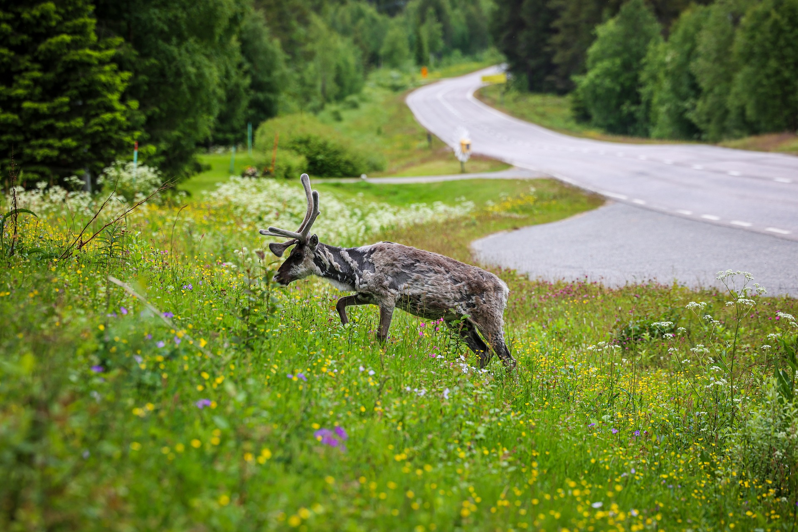

Tunnettuja kansallispuistoja
Alla olevaan taulukkoon on koottu muutama suosittu kansallispuisto.
| Puisto | Maakunta | Tunnettu |
|---|---|---|
| Nuuksio | Uusimaa | Lähellä pääkaupunkiseutua |
| Pallas-Yllästunturi | Lappi | Tunturit ja pitkät vaellusreitit |
| Koli | Pohjois-Karjala | Kansallismaisema Pielisen yllä |
| Oulanka | Pohjois-Pohjanmaa ja Lappi | Karhunkierros-reitti |